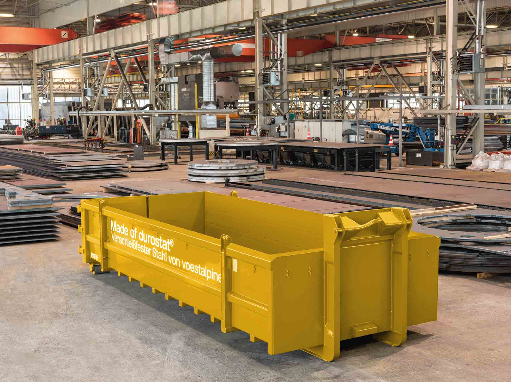
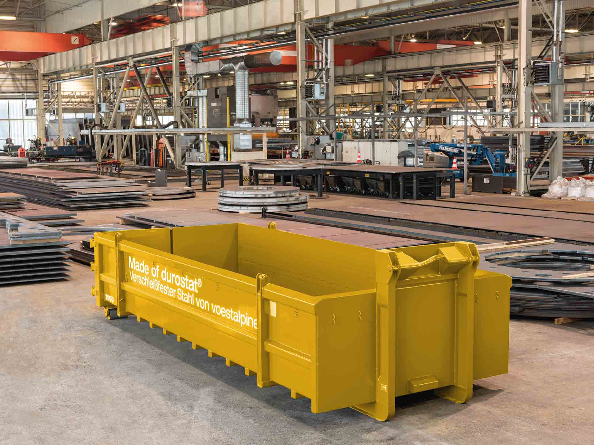

Regosteel
złoty partner firmy Voestalpine

złoty partner firmy Voestalpine
Firma Regosteel powstała w 2016 roku. Jesteśmy złotym partnerem austriackiej huty voestalpine oferującej najwyższej klasy stal durostat, alform i aldur.
Specjalizujemy się zarówno w dostawie stali specjalnych voestalpine, jak i gotowych elementów wykonanych ze stali specjalnych, realizowanych na indywidualne zamówienia. Stanowimy zespół wyspecjalizowanych doradców technicznych, nie boimy się wyzwań, a praca nad nowymi projektami to nasza pasja. Jesteśmy w stanie spełnić wszelkie oczekiwania klientów i do ich potrzeb dobrać możliwie najlepsze rozwiązania.
Działamy na terenie całej Polski, a także na terenie krajów Europy Wschodniej i Skandynawii. Konsekwentnie poszerzamy rynki zbytu. Naszym celem jest zbudowanie stabilnej sieci dystrybucji stali specjalnych i gotowych elementów stalowych.


Regosteel specjalizuje się w dostawie najwyższej jakości stali durostat, alform , aldur i altrix (nowość!) wytwarzanych przez hutę voestalpine.
durostat to najwyższej klasy stal specjalna o maksymalnej odporności na zużycie przy największych obciążeniach. Charakteryzuje się wyjątkową odpornością na ścieranie. Dostępna w trzech poziomach twardości 400, 450 i 500 HB. Zakres grubości od 2 do 100mm (HB400). durostat to świetny materiał do produkcji wymagających odporności na duże obciążenia mechaniczne i zużycie kontenerów, wywrotek, łyżek do koparek, elementów trących, itp. Szczegółowa charakterystyka stali dostępna jest na stronie internetowej www.voestalpine.com/durostat/en
alform to wysokowytrzymała drobnoziarnista stal specjalna. Charakteryzuje się szerokim zakresem granicy plastyczności (500-1100 Mpa) i świetną wytrzymałością. Grubość od 2-60 mm. alform to najlepszy wybór przy obróbce plastycznej na zimno, cięciu termicznym oraz spawaniu. Ma zastosowanie wszędzie tam gdzie liczy się redukcja masy maszyn i urządzeń przy zachowaniu maksymalnego bezpieczeństwa konstrukcyjnego (kontenery, naczepy, wagony kolejowe, dźwigi, podnośniki etc.). Szczegółowa charakterystyka stali dostępna jest na stronie internetowej www.voestalpine.com/alform/en
aldur to ulepszana cieplnie, wysokowytrzymała drobnoziarnista stal o minimalnej granicy plastyczności między 500 a 960 MPa i doskonałej wytrzymałości/udarności w niskich temperaturach. aldur stosowany jest wszędzie tam, gdzie wymagana jest redukcja wagi i bezpieczeństwo pracy w niskich temperaturach. Przykładami zastosowań stali Aldur są konstrukcje spawane o wysokim poziomie naprężeń w dźwigach i konstrukcji pojazdów, w urządzeniach górniczych i rurociągach ciśnieniowych. Szczegółowa charakterystyka stali dostępna jest na stronie internetowej tutaj.


Regosteel zajmuje się również sprzedażą gotowych elementów ze stali specjalnych voestalpine. Specjalizujemy się w dostawach elementów do: zabudowy wywrotek, podwozia wywrotek i naczep, kontenerów, łyżek do koparek, wysięgników urządzeń dźwigowych, innych konstrukcji inżynierskich.
Na zamówienie klientów oferowana przez nas stal może być poddana następującym obróbkom:
Możemy wykonać każdy projekt na indywidualne zamówienie. Naszym priorytetem jest terminowa dostawa przy zapewnieniu wysokich standardów jakościowych oraz korzystnych cen.


Wychodząc naprzeciw oczekiwaniom klientów do naszej stałej oferty wprowadziliśmy najwyższej jakości druty spawalnicze Böhler rekomendowane przez voestalpine. Produkty te perfekcyjnie współgrają z jakością stali voestalpine tworząc najtrwalsze połączenia. Wraz z fizycznym produktem oferujemy również pełen dostęp do profesjonalnej ekspertyzy technicznej specjalistów z Regosteel oraz Böhler w celu zapewnienia najwyższego poziomu doradztwa tam, gdzie jest ono niezbędne.


 

Oferowana stal durostat i alform świetnie nadaje się do produkcji między innymi:
i wielu innych zastosowań
Zastosowanie stali voestalpine gwarantuje wysokiej jakości produkt końcowy.
Chętnie udzielimy wszelkich szczegółowych informacji dotyczących naszej oferty. Skontaktuj się z naszym działem sprzedaży za pomocą poniższego formularza.